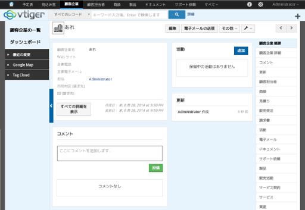

vtiger CRMは、SugarCRMのコミュニティエディションをベースに開発されているオープンソースのCRMソフトウェアです。
日本語版6.0は Betaという扱いのようなので、Walbrixでの扱いもテスト版としてコード入力によるダウンロードの形になると思います。
Walbrixの仮想アプライアンスは私の時間がある時に追加したり更新したりしてるのですが、無料で提供しているため会社の売上に（少なくとも直接は）なりません。よって代表である私の月給も 85,000円のままビタイチ増えません。というわけで、せめて食料など恵んでいただけたら生きていけます。食料じゃなくてフィギュアなら和みます。
Amaznoギフト券にて 1,000円のご支援をいただきました。目標額達成です。実行完了したらこのページでお知らせします（し、Twitterやサポートフォーラムで公式にアナウンスもするでしょう）。
vtiger CRMの Walbrix用仮想アプライアンスをテスト版という位置づけで公開しました。
http://t.co/xu4U2CITO2
— Walbrix お知らせとサポート (@wbsupport) 2014, 8月 28
{{end}}